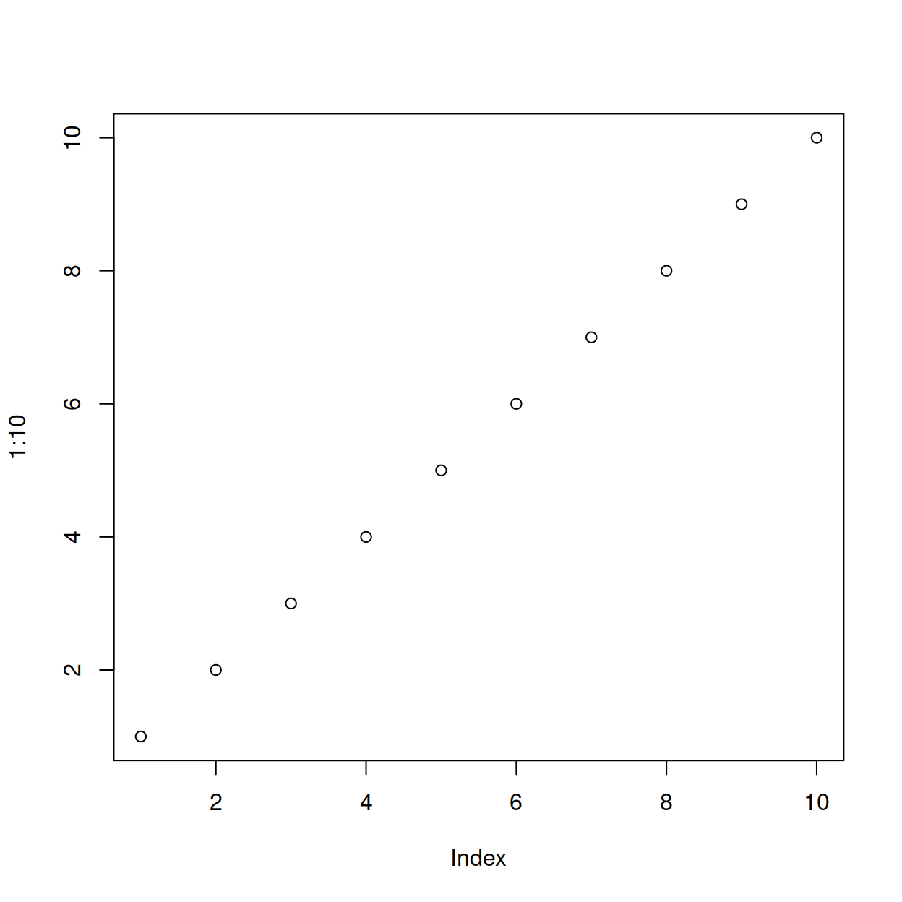
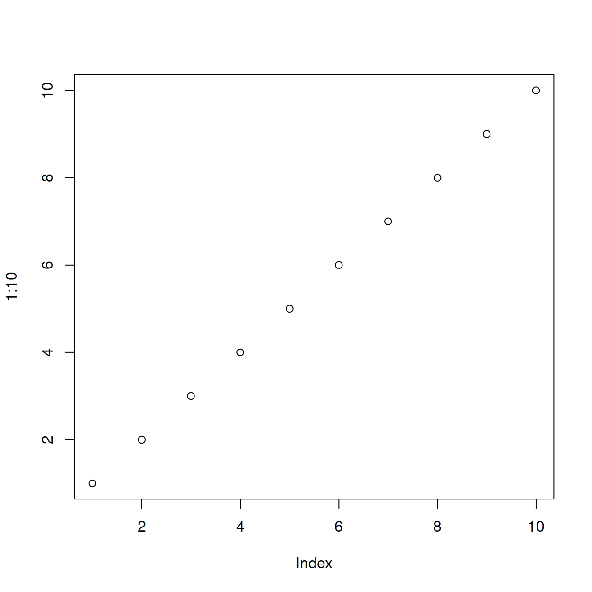

Figure 1
This is the figure caption.

Note. This is a note below the figure.
Cillian McHugh1, Marek McGann2, Eric R. Igou1, and Elaine L. Kinsella1
1Department of Psychology, University of Limerick
2Department of Psychology, Mary Immaculate College
Moral dumbfounding occurs when people maintain a moral judgment in the absence of supporting reasons. Drawing on dual-process approaches to moral judgment, one possible explanation for moral dumbfounding proposes that it occurs as a result of a conflict between intuitive and deliberative processes. Consistent with this explanation, previous research has shown that under manipulations designed to lead to more intuitive thinking rather than deliberative thinking (such as increased cognitive load), people are less likely to provide reasons for their judgments, and more likely to provide dumbfounded responses in a moral dumbfounding task. Building on this work the present research examines if dumbfounded responding can be reduced through experimental manipulations designed to facilitate deliberative thinking (over intuitive thinking). Drawing on construal-level theory, and the finding that distancing facilitates deliberative thinking, we predict that including a distancing manipulation in a moral dumbfounding task will increase reason-giving, and reduce dumbfounded responding. We propose a pre-registered study to test this prediction.
Keywords: moral dumbfounding, distancing, construal-level theory, dual-processes, reasons, intuitions
This is my introductory paragraph. The title will be placed above it automatically. Do not start with an introductory heading (e.g., “Introduction”). The title acts as your Level 1 heading for the introduction. McHugh et al. (2022)
Readers are better able to follow your ideas if you differentiate sections in your introduction with headings. Mostly stick to level 2 headers. Sometimes level 3 headings are needed, though. Be sparing to the point of stinginess with levels 4 and 5.
Subsections of the introduction have level 2 headings. A paragraph after a level 2 Heading is on a new line. Regular paragraphs are indented, flush left, and double-spaced.
You do not need to put text after a heading. You can put a higher-level heading directly underneath if you want.
Subsections of a level 2 heading are placed under level 3 headings.
A level 4 heading should be indented, flush left, bold, title case, and end with a period. A paragraph after a level 4 or 5 heading is on a new line in this markdown document but will appear as if it were in the same paragraph when rendered. You need at least one paragraph after a level 4 or 5 heading. If you forget the period at the end of the level 4 or 5 heading, it will be added automatically. A period will not be added if the heading ends with a question mark or an exclamation point.
Subsequent paragraphs go on their own lines.
A level 5 heading should be indented, flush left, bold italic, title case, and end with a period. Notice that there was no period after this level 5 heading in the markdown document, but it does appear in the rendered document.
Subsequent paragraphs go on their own lines.
I am going to cite a reference here in square brackets (CameronTrivedi2013?). This reference was in my bibliography file. Here are some variations on parenthetical citations:
Page references (or any other suffixes are placed after the reference. If you want a comma, you’ll need to insert it yourself: (CameronTrivedi2013?)
Prefixes (with or without a comma) are placed before the reference: (e.g., CameronTrivedi2013?)
2 or more citations separated by a semicolon (CameronTrivedi2013?; cohen2003applied?)
Any prefixes or suffixes needing a literal semicolon will confuse Quarto (actually Pandoc). To make it clear that you need to print a semicolon, put a backslash before the semicolon: [FOIL; (CameronTrivedi2013?)]
Text references are possible, too.
(CameronTrivedi2013?) said some interesting things.
(cohen2003applied?) said specific things on specific pages.
Place the reference’s year by itself with a minus sign: (CameronTrivedi2013?)
The last paragraph of the introduction usually states the specific hypotheses of the study, often in a way that links them to the research design.
General remarks on method. This paragraph is optional.
Not all papers require each of these sections. Edit them as needed. Consult the Journal Article Reporting Standards for what is needed for your type of article.
Who are they? How were they recruited? Report criteria for participant inclusion and exclusion. Perhaps some basic demographic stats are in order. A table is a great way to avoid repetition in statistical reporting.
This section can also be titled Materials or Apparatus. Whatever tools, equipment, or measurement devices used in the study should be described.
Describe Measure A.
Describe Measure B.
What did participants do?
How are the data going to be analyzed?
Here we describe the basic characteristics of our primary variables.
Let’s make a figure. A reference label for a figure in APA format must have the prefix apafg-. This is different from the usual Quarto prefix fig-.
Figure 1
This is the figure caption.

Note. This is a note below the figure.
To refer to any figure or table, put the chunk label in curly braces. For example, see Figure 1. In Figure 2, we import an image.
Figure 2
This is an imported graphic.
Note. My note.
We can make a table the same way as a figure except that the label prefix is apatb-. Again, this is different from the usual quarto prefix tbl-, which will put the table table caption in the wrong place and with non-APA formatting.
Table 1
Here is the table caption.
Numbers | Letters |
|---|---|
1 | A |
2 | B |
3 | C |
4 | D |
Note. Here is the note below the table.
To refer to this table in text, put the table’s reference label in curly braces like so: As seen in Table 1, there is not much information.
What if you want the tables and figures to be at the end of the document? In the .pdf format, you can set the floatsintext option to false. For .html and .docx documents, there is not yet an automatic way to put tables and figures at the end. You can, of course, just put them all at the end, in order. The reference labels will work no matter where they are in the text.
Describe results in non-statistical terms.
Every study has limitations. Based on this study, some additional steps might include…
Let’s sum this up.
If there are multiple appendices, label them with level 1 headings as Appendix A, Appendix B, and so forth.